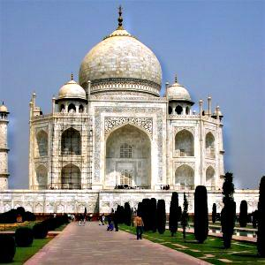
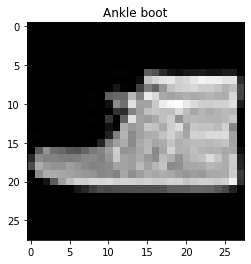
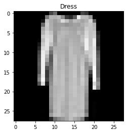
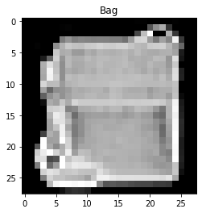
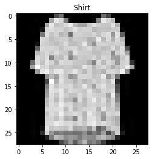
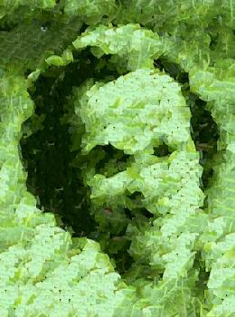

This website contains my project writeups from UC Berkeley's computational photography class (CS 194-26), which I took in Spring 2020. If you are an employer and would like to see my project source code, please contact me privately.
Image pyramids and cropping.
Gaussian filters, automatic image straightening, image sharpening, Gaussian and Laplacian stacks, multiresolution blending.
 |
 |
Image correspondences, face warping, and computing the mean face of a population.

Image classification and semantic segmentation.
|  |  |  |  |
Homography, rectification, and feature matching for autostitching.
 |
 |
Depth refocusing and aperture adjustment of light fields, seam finding for image quilting/texture synthesis and transfer.

|
 |